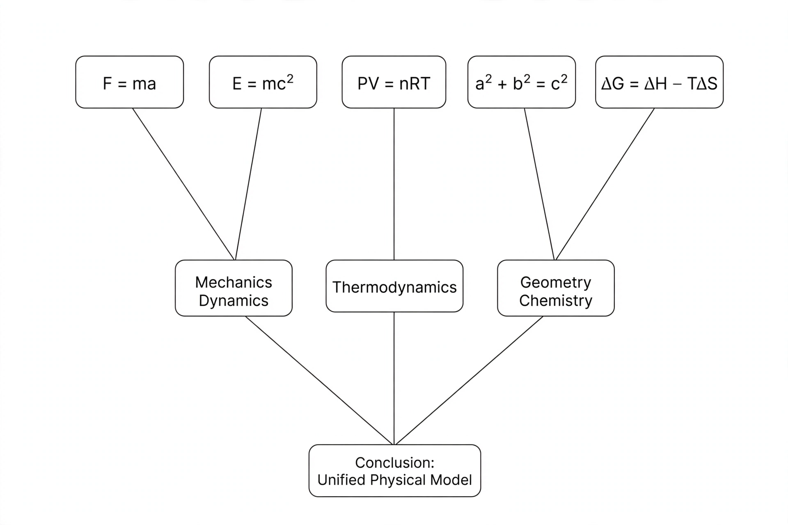

Proof theory

[Image: A branching tree of logical formulas, premises at the leaves and a conclusion at the root]
Proof theory is the branch of mathematical logic that represents mathematical proofs as formal objects — trees of formulas built by explicit rules — and studies them mathematically, asking what can be proved, how long proofs must be, and what a proof system can say about itself.
David Hilbert founded the subject in the 1920s as the tool of his programme to secure mathematics: formalise everything, then prove the formal system consistent by safe, finitary means. Gödel's second incompleteness theorem (1931) blocked the original plan, but the tools survived and flourished.
Developments
Gerhard Gentzen's sequent calculus and natural deduction (1934–35) made proof structure analysable; his consistency proof for arithmetic used transfinite induction up to the ordinal ε₀, calibrating exactly how much strength arithmetic's consistency requires.
Through the Curry–Howard correspondence, proofs correspond to computer programs, making proof theory a foundation of programming-language design and of proof assistants such as Coq and Lean.